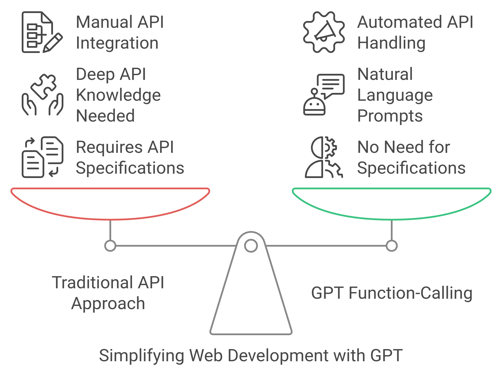

The Impact of GPTs + Function-Calling on Web Development

It’s the weekend, and I spent some time researching how to develop our LLM-based services. What I discovered is how GPTs + function calling are transforming traditional web development. I realize now that I was a bit late to fully grasp this shift, but the impact is undeniable.

How GPT’s Function Calling is Revolutionizing Web Development
In recent years, web development has undergone rapid transformation, primarily driven by the rise of APIs, microservices, and cloud architectures. Traditionally, developers had to manually integrate services, convert data formats, and handle various API-specific nuances. With the advent of Large Language Models (LLMs) and, more specifically, the function calling capability in GPT-based models, this landscape is evolving rapidly.
Let’s explore how these advancements are reshaping web development into a more intuitive and automated process, and why we should be eager to embrace this change at NinjaLABO.
The Old Paradigm: Web Development as API Mashups
Web development during the era of microservices could often be seen as a series of API mashups. Developers spent significant time stitching together APIs from various services to create cohesive systems. This required extensive effort to ensure data was correctly formatted, sent over the wire, and processed by another system.
For example, integrating a payment service with an e-commerce platform meant developers had to handle authentication, format requests in JSON or XML, manage error handling, and ensure that the responses aligned with the rest of the system. These repetitive tasks consumed a large portion of a developer’s time.
This approach introduced friction. Developers were often bogged down in ensuring that APIs “spoke the same language,” especially when translating between services with slightly different data formats (e.g. JSON).
The Game Changer: GPT’s Function Calling Capability
With the recent advancements in LLMs, particularly the introduction of GPT models’ function calling capability, this tedious workflow is becoming a thing of the past. These new-generation tools don’t just act as text-based conversational systems; they can now handle function calls, process structured data, and automate much of the repetitive work developers used to do manually.
For instance, instead of writing boilerplate code to connect services, you can now instruct GPT to perform a function call and execute API integrations seamlessly. The LLM can handle the format conversion behind the scenes—whether it’s JSON or XML—allowing you to focus on higher-level tasks. This ability to perform complex operations from natural language queries opens up new possibilities for how web services are built and integrated. And it’s not only for requests but also responces to be processed and given as a format of natural language, no visibility of intermediate data format at all in this route.
For developers, this means a shift from worrying about low-level implementation details to focusing on higher-level logic. You simply describe what you want the system to do in natural language, and the underlying LLM takes care of the rest. A task that once required understanding API documentation, writing glue code, and managing data flows can now be handled efficiently by AI.
API + GPT: A New Development Paradigm
In the past, developers had to publish API specifications (such as OpenAPI) to describe how different services could interact. This required both developers and consumers to understand the specification, write code to communicate with it, and handle any necessary modifications.
With GPT and function-calling, this interaction is simplified into a natural language interface. You no longer need an OpenAPI spec or an in-depth understanding of each service’s API. Instead, you simply ask GPT to interact with a service, and it takes care of the rest.
For example, let’s say you want to add sophisticated features to our LLM camera project—where the camera can detect events, generate insights, and send notifications in real-time. Instead of manually integrating external APIs for each feature, you can prompt GPT to handle those interactions. The LLM will take care of the API calls, processing the data, and returning the necessary results—all without the need for deep API expertise.
This paradigm opens up a new world where developing complex systems doesn’t have to be constrained by detailed API knowledge. Instead, the focus shifts to how we articulate the behavior and logic of these systems in natural language, letting the model handle the underlying mechanics.
What This Means for NinjaLABO Developers
The implications are clear: as web development becomes more about problem-solving and user experience design, we can focus less on the technical minutiae of how services communicate with each other. At NinjaLABO, this opens up incredible potential for our ongoing projects, especially the LLM camera project we’ve been developing for AI mobility applications.
With LLMs and function-calling, we can bridge the gap between various external data sources (e.g., parking availability, traffic patterns, or public safety events) and integrate them into the camera’s insights seamlessly. You could easily imagine scenarios where:
- The camera detects a free parking spot and notifies nearby users in real-time.
- It monitors traffic flow and sends alerts when congestion builds up.
- It autonomously alerts authorities when an incident occurs, based on real-time data.
Each of these actions would have required detailed integration work, error handling, and data processing in the past. Now, with GPT’s function-calling capabilities, these workflows can be simplified, enabling our team to focus on building better, faster services without the overhead of manual API management.
This shift means that our developers have a powerful new toolset at their disposal to streamline backend logic and empower the camera’s capabilities. We’re moving into a phase where we can achieve more by focusing on describing what we want the system to do, rather than how to do it.
What’s Left? The Front-End, and a New Way of Thinking
With backend integration becoming increasingly automated through GPTs and function-calling, one might wonder—what about the front-end? Are we approaching a point where even front-end development could be handled just as easily?
Tools like Anthropic Artifacts suggest that even UI generation may eventually be abstracted, allowing developers to describe front-end behavior and design in natural language, with the system generating code and interfaces automatically.
While this may seem overly optimistic, the rapid advancements in AI make it worth considering. The gap between high-level design thinking and low-level implementation is closing. As LLMs evolve, the line between coding and simply “describing” what you want is becoming increasingly blurred. This new way of thinking can empower our team to explore even more innovative solutions in the near future.

Looking Ahead: Embracing the Future of Web Development
Web development is on the brink of a major transformation. With the function-calling feature and LLM-powered automation, the focus will shift toward designing user stories and experiences, rather than connecting disparate services manually. This shift will lead to faster development cycles, smoother integrations, and make technology more accessible to a broader range of users.
At NinjaLABO, we’re already exploring how to leverage these capabilities to drive the LLM camera project forward. This isn’t just a front-end or backend improvement—it’s an entirely new approach to how we build, iterate, and innovate.
By embracing this shift, our developers have an opportunity to experiment with these cutting-edge tools and push the boundaries of what’s possible, creating smarter, faster, and more intuitive services.
The web development world is evolving—are you ready to explore what’s next?